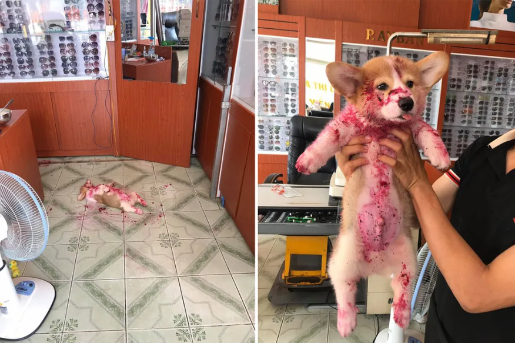
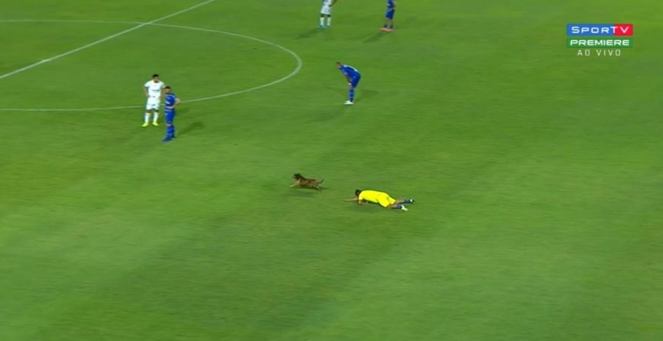
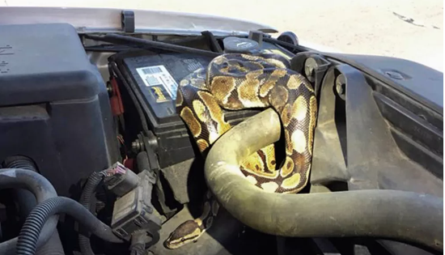
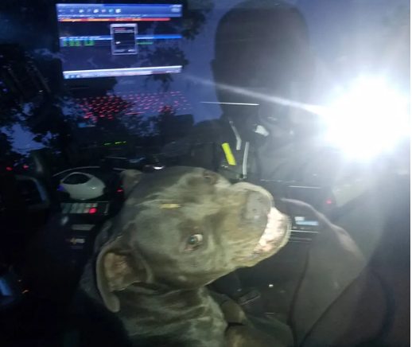
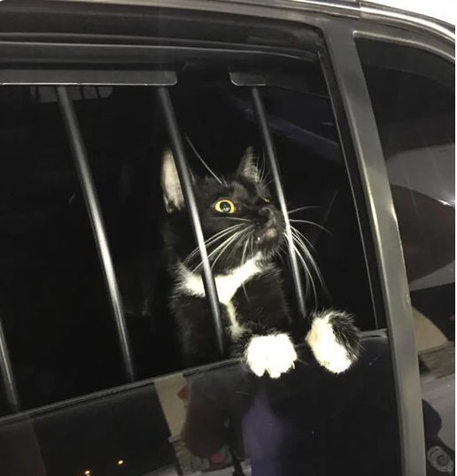

Últimas Notícias ➔
Japonês que gastou R$ 100 mil reais em fantasia de cachorro faz seu primeiro passeio na rua:
Publicado em 15/03/2024.Toko-San aparece farejando outros cachorros em um parque.

Cachorrinho dá susto em donos e viraliza na WEB.
Homem procurado não gosta de foto divulgada pela polícia e sugere outra.
Cinco homens são presos em lanchonete da rede 'Five Guys' na Flórida.
Invasor entra em casa nos EUA, faz faxina e vai embora sem roubar nada.
Esportes
“Menino” flagrado fumando em jogo de futebol tem 36 anos.
Publicado em 12/03/2024. Uma imagem de um “menino” fumando em jogo, viralizou.
Edilson Capetinha está no xilindró.

CSA x Cruzeiro teve drible ousado de cahorro em gandula.
Torcedor pelado na comemoração do Náutico?
Homem come 7 cachorros-quentes e vence concurso.
Fofocas
BBB24: Davi entra na mira dos rivais na formação do próximo Paredão...
Publicado em 12/03/2024. Rivais pretendem colocar o brother na berlinda.
Bruna Marquizine curte festinha privada ao lado de cantor internacional.
'Está tudo ok com o rim', tranquiliza Faustão.
Ludmilla perde a paciência, se irrita e briga com fãs: 'Desempregado'
Após aparecer irreconhecível, Eduardo Costa se pronuncia.
Política
Eleição para prefeitura é decidida no cara ou coroa nas Filipinas
Publicado em 12/03/2024. Ambos os candidatos receberam 3.495 votos na cidade de Araceli.
Jacaré atravessa rua usando faixa de pedestres nos EUA.
Burocratas atrasam pedido de licença de casamento nos EUA por achar que o Novo México é um país.

Cobra é retirada de motor de carro nos EUA, e dono do animal é multado.

Embaixada dos EUA na Austrália envia e-mail com foto de gato fantasiado de Cookie Monster.
Policial
Policial de trânsito de cartolina é furtado no Brasil
Publicado em 12/03/2024. Função de Bob era coibir excesso de velocidade, mas ele acabou removido de rua.

Cachorro 'sequestra' carro policial no Texas.
